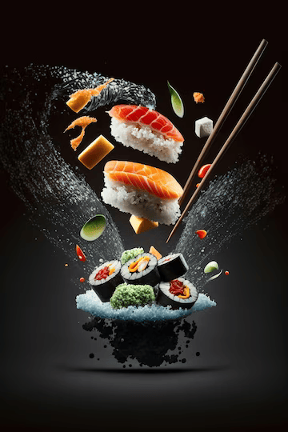
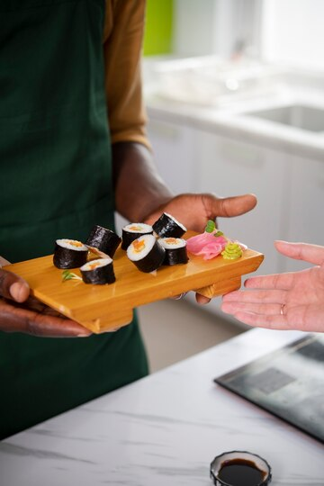
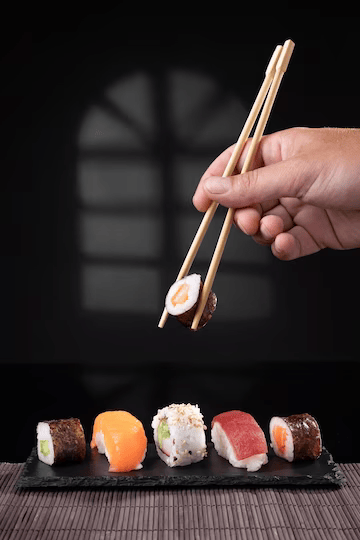

En OTAKU SUSHI, nuestro concepto se forja en la armoniosa fusión de dos culturas
culinarias: la tradición japonesa y la riqueza de los ingredientes locales de Chile. Nos apasiona la
reinterpretación del sushi, dándole un sello único y un estilo propio que resalta la esencia de
ambas tradiciones.
Nuestro enfoque se basa en una exhaustiva investigación de los elementos fundamentales del sushi
japonés, para luego adaptarlos de manera creativa y respetuosa a la diversidad de insumos que ofrece
nuestra tierra. Cada platillo es una obra maestra, donde el equilibrio natural de los productos
locales se une con la esencia de ingredientes japoneses traídos especialmente para nuestra Otaku
House.
En OTAKU SUSHI, la excelencia culinaria se combina con la pasión por la innovación, resultando en
una experiencia gastronómica única y emocionante. Nuestro concepto refleja el compromiso de deleitar
a nuestros comensales con sabores cautivadores y sorprendentes, en un ambiente acogedor y
sofisticado que invita a disfrutar de cada bocado con todos los sentidos. Bienvenidos a una
experiencia de sushi como ninguna otra.


Nuestro equipo es el corazón de nuestra pasión por la cocina japonesa. Conformamos
un grupo unido y comprometido, dedicado al desarrollo y perfeccionamiento de cada proceso que
compone esta grandiosa disciplina culinaria. Cada miembro de nuestro equipo es un apasionado del
sushi, con un profundo conocimiento de la tradición y técnicas japonesas, combinado con una
creatividad sin límites.
Nuestros Otaku Masters son verdaderos maestros en el arte del sushi, expertos en la selección y
manejo de los ingredientes más frescos y exquisitos. Su habilidad y destreza en la preparación de
cada platillo garantiza que cada bocado sea una experiencia inolvidable para nuestros clientes.
En nuestro Otaku Menú, encontrarás que todos nuestros productos tienen un ingrediente en común: la
pasión. Es esta pasión la que impulsa a nuestro equipo a superar constantemente las expectativas y a
brindar una experiencia gastronómica única. Estamos orgullosos de nuestro equipo y de la pasión que
ponen en cada detalle para hacer de OTAKU SUSHI un lugar especial y memorable.
En OTAKU SUSHI, nuestra pasión por la calidad y el sabor se refleja en cada
uno de nuestros productos. Nuestro menú es una exquisita fusión de ingredientes chilenos frescos
y auténticos, seleccionados minuciosamente para garantizar la máxima calidad en cada platillo
que ofrecemos. Nos enorgullecemos de conocer la trazabilidad de cada insumo que proviene de
nuestros proveedores, asegurando así que nuestros clientes disfruten de un producto de primera
calidad.
Cada día, nuestro equipo de expertos busca los ingredientes más frescos y saludables para
deleitar a nuestros comensales con la esencia de la auténtica cocina japonesa fusionada con los
sabores de Chile. Nuestro menú es una muestra del compromiso que tenemos con ofrecer una
experiencia gastronómica excepcional, donde cada bocado es una celebración de la deliciosa
combinación entre tradición y frescura.
En OTAKU SUSHI, nos enorgullecemos de ofrecer productos únicos que reflejan el cariño y
dedicación con los que son preparados. Cada platillo es una obra maestra culinaria que rinde
homenaje a la riqueza de los ingredientes chilenos, permitiendo a nuestros clientes disfrutar de
la frescura y el sabor en cada exquisito sushi que se sirve en nuestra mesa.

En OTAKU SUSHI, valoramos profundamente el medio ambiente y estamos
comprometidos con su cuidado en cada etapa de nuestro proceso culinario. Desde la obtención de
nuestras materias primas hasta la entrega del producto final en la mesa de nuestros clientes,
adoptamos prácticas responsables y sostenibles.
Trabajamos de la mano con proveedores que comparten nuestra visión de preservar los recursos
marinos, asegurándonos de obtener pescados y mariscos de manera responsable, respetando las
temporadas de pesca y la biodiversidad marina. Además, estamos constantemente buscando
alternativas y opciones más amigables con el medio ambiente para nuestro empaque y logística,
reduciendo así nuestro impacto en la naturaleza.
Creemos que nuestra responsabilidad no solo radica en ofrecer una deliciosa experiencia
culinaria, sino también en asegurarnos de que nuestras prácticas sean sostenibles y contribuyan
positivamente al ecosistema. Nuestro compromiso con el medio ambiente es una parte esencial de
quienes somos como restaurante y como individuos, y estamos dedicados a seguir mejorando y
adoptando medidas que protejan y preserven el entorno natural para las futuras generaciones.